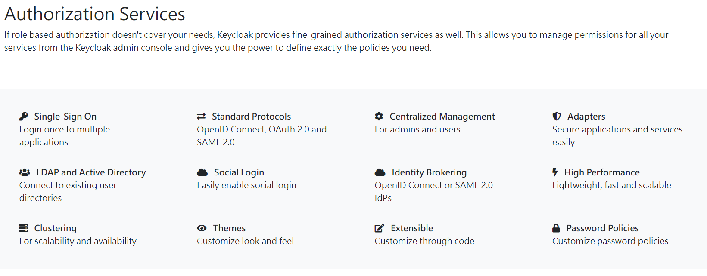

Spring Boot 3 and Keycloak
實作 Securing Spring Boot 3.1.0 Applications with Spring Security and Keycloak 21
參考資料：https://hennge.com/tw/blog/what-is-openid-connect.html

環境準備： 1. Spring Boot / Spring Security 3.1.2 2. JDK 17 3. Spring Boot Docker Compose 4. Docker (進而安裝 keycloak 22、MySQL)
pom.xml
<?xml version="1.0" encoding="UTF-8"?>
<project xmlns="http://maven.apache.org/POM/4.0.0"
xmlns:xsi="http://www.w3.org/2001/XMLSchema-instance"
xsi:schemaLocation="http://maven.apache.org/POM/4.0.0 https://maven.apache.org/xsd/maven-4.0.0.xsd">
<modelVersion>4.0.0</modelVersion>
<parent>
<groupId>org.springframework.boot</groupId>
<artifactId>spring-boot-starter-parent</artifactId>
<version>3.1.2</version>
<relativePath /> <!-- lookup parent from repository -->
</parent>
<groupId>com.example</groupId>
<artifactId>HelloSpringBoo2</artifactId>
<version>0.0.1-SNAPSHOT</version>
<name>HelloSpringBoo2</name>
<description>Demo project for Spring Boot</description>
<properties>
<java.version>17</java.version>
</properties>
<dependencies>
<dependency>
<groupId>org.springframework.boot</groupId>
<artifactId>spring-boot-starter-oauth2-resource-server</artifactId>
</dependency>
<dependency>
<groupId>org.springframework.security</groupId>
<artifactId>spring-security-oauth2-jose</artifactId>
</dependency>
<dependency>
<groupId>org.springframework.boot</groupId>
<artifactId>spring-boot-starter-security</artifactId>
</dependency>
<dependency>
<groupId>org.springframework.boot</groupId>
<artifactId>spring-boot-starter-web</artifactId>
</dependency>
<dependency>
<groupId>org.springframework.boot</groupId>
<artifactId>spring-boot-devtools</artifactId>
<scope>runtime</scope>
<optional>true</optional>
</dependency>
<dependency>
<groupId>org.springframework.boot</groupId>
<artifactId>spring-boot-docker-compose</artifactId>
<scope>runtime</scope>
<optional>true</optional>
</dependency>
<dependency>
<groupId>org.projectlombok</groupId>
<artifactId>lombok</artifactId>
<optional>true</optional>
</dependency>
<dependency>
<groupId>org.springframework.boot</groupId>
<artifactId>spring-boot-starter-test</artifactId>
<scope>test</scope>
</dependency>
<dependency>
<groupId>org.springframework.security</groupId>
<artifactId>spring-security-test</artifactId>
<scope>test</scope>
</dependency>
</dependencies>
<build>
<plugins>
<plugin>
<groupId>org.springframework.boot</groupId>
<artifactId>spring-boot-maven-plugin</artifactId>
<configuration>
<excludes>
<exclude>
<groupId>org.projectlombok</groupId>
<artifactId>lombok</artifactId>
</exclude>
</excludes>
</configuration>
</plugin>
</plugins>
</build>
</project>
compose.yaml
volumes:
mysql_data:
driver: local
services:
mysql:
image: mysql
volumes:
- mysql_data:/var/lib/mysql
environment:
MYSQL_ROOT_PASSWORD: root
MYSQL_DATABASE: keycloak
MYSQL_USER: keycloak
MYSQL_PASSWORD: password
ports:
- 3306:3306
keycloak:
image: quay.io/keycloak/keycloak:22.0.1
container_name: keycloak
environment:
- KEYCLOAK_ADMIN=admin
- KEYCLOAK_ADMIN_PASSWORD=password
- KC_DB=mysql
- KC_DB_URL_HOST=mysql
- KC_DB_URL_DATABASE=keycloak
- KC_DB_USERNAME=keycloak
- KC_DB_PASSWORD=password
- KC_HEALTH_ENABLED=true
ports:
- "9090:8080"
command: start-dev
depends_on:
- mysql
# healthcheck:
# test: "curl -f http://localhost:9090/health/ready || exit 1"
adminer:
image: adminer
restart: always
ports:
- 8081:8080
Spring Security Config
@Configuration
@EnableWebSecurity
@EnableMethodSecurity
public class WebSecurityConfig {
@Bean
public SecurityFilterChain securityFilterChain(HttpSecurity httpSecurity) throws Exception {
httpSecurity.authorizeHttpRequests(registry -> registry
// .requestMatchers("/secured/**").hasRole("SYS_ADMIN")
// .requestMatchers("/secured/**").permitAll()
.anyRequest().authenticated())
.oauth2ResourceServer(oauth2Configurer -> oauth2Configurer
.jwt(jwtConfigurer -> jwtConfigurer.jwtAuthenticationConverter(jwt -> {
Map<String, Collection<String>> realmAccess = jwt.getClaim("realm_access");
Collection<String> roles = realmAccess.get("roles");
var grantedAuthorities = roles.stream()
.map(role -> new SimpleGrantedAuthority("ROLE_" + role)).toList();
return new JwtAuthenticationToken(jwt, grantedAuthorities);
})));
return httpSecurity.build();
}
}
Controller
可以在 Controller 層中加入 @PreAuthorize，代表需要擁有 SYS_ADMIN 角色的用戶，才能夠存取這一個Controller 的資源。
@PreAuthorize 也可以放到 Controller 層中的每一個 Method 中。以做更細顆粒度的授權。
@RequestMapping("/secured")
@RestController
@PreAuthorize("hasRole('SYS_ADMIN')")
public class MySuperSecuredController {
@GetMapping("/get-data")
public String get(){
return "SUPER SECURED DATA";
}
}
application.yaml
server:
port: 8080
spring:
security:
oauth2:
resourceserver:
jwt:
issuer-uri: http://localhost:9090/realms/MyAppRealm
jwk-set-uri: http://localhost:9090/realms/MyAppRealm/protocol/openid-connect/certs
MyAppRealm：需要在Keycloak中新增此Realm。相關設定如下。
Keycloak 在 Docker 與 設定 Keycloak

打開瀏覽器，開啟 Keycloak 登入頁面 (http://localhost:9090)

Realm
輸入 Realm name：MyAppRealm

Client

Role：SYS_ADMIN
User：建立一個 User，並且將角色綁定進去。

Postman 測試
透過 OpenID Connect 取得 Token
http://localhost:9090/realms/MyAppRealm/protocol/openid-connect/token

利用剛剛取得的Token，存取 Web API 資訊
http://localhost:8080/secured/get-data

如果要登出某一用戶的所有 Session
http://localhost:9090/realms/master/protocol/openid-connect/token

http://localhost:9090/admin/realms/MyAppRealm/users/3a9574f5-01ae-4caf-839c-f6d5ddb9321c/logout